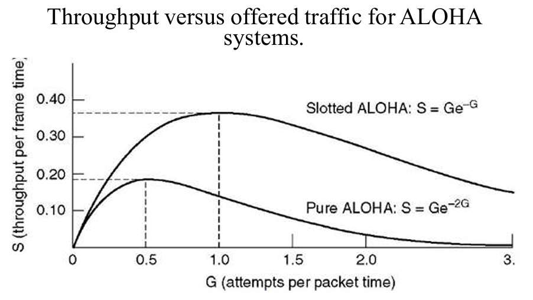

介质访问控制子层¶
约 4152 个字 7 行代码 1 张图片 预计阅读时间 14 分钟
多个站点共享一条广播信道时，需要回答：谁可以在什么时候发送？ 负责协调这种访问的协议属于数据链路层的 MAC （ Medium Access Control ，介质访问控制）子层。
IEEE 802 体系把数据链路层分为 LLC （逻辑链路控制）和 MAC 两个子层。LLC 提供与具体介质无关的链路服务； MAC 处理介质访问、帧的封装与识别、MAC 寻址和差错检测。
信道分配¶
静态划分与动态分配¶
FDM、TDM 等方法预先划分频带或时隙。用户数量固定、业务持续时，这种方法简单有效；网络流量具有突发性时，空闲用户的份额会被闲置，而忙碌用户仍然需要等待。
动态分配根据发送需求决定信道的使用者，主要有两种思路：
- 随机访问：允许站点争用信道，发生冲突后再按规则重试。
- 受控访问：通过预约、轮询或令牌确定发送顺序。
分析共享信道时，我们常假设各站独立产生帧、共享一个信道、重叠发送会冲突，再分别讨论时间连续或分槽、是否能监听载波。
静态划分的排队代价¶
在 M/M/1 模型中，设帧到达率为 \(\lambda\) 帧/s ，平均帧长为 \(1/\mu\) bit ，链路容量为 \(C\) bit/s。服务率为 \(\mu C\) 帧/s ，稳定条件是 \(\lambda<\mu C\)，平均逗留时间为：
若平均分成 \(N\) 条独立子信道，每条到达率与容量均为原来的 \(1/N\)，则：
这里的 \(T\) 包括排队和发送时间。动态共享的好处在于，某个用户暂时没有数据时，其他用户仍能利用空出的容量。
随机访问协议¶
ALOHA¶
纯 ALOHA 有数据就发送，不先监听信道。若在规定时间内未收到确认，就等待随机时间后重传。
设每帧发送时间均为 \(T\)。对于从时刻 \(t\) 开始的一帧，其他帧若在 \((t-T,t+T)\) 内开始发送，就会与它重叠，因此冲突危险期长 \(2T\)。
时隙 ALOHA 把时间分成长度为 \(T\) 的时隙，各站同步，只能在时隙起点发送。冲突只发生在选择同一时隙的帧之间，危险期缩短为 \(T\)。
在固定帧长、发送尝试服从泊松分布的模型下，设每帧时间内平均发送尝试次数为 \(G\)，其中包含新帧与重传帧，归一化吞吐量为 \(S\)：
| 协议 | 吞吐量 | 最大值 |
|---|---|---|
| 纯 ALOHA | \(S=Ge^{-2G}\) | \(G=1/2\) 时，\(S_{\max}=1/(2e)\approx18.4\%\) |
| 时隙 ALOHA | \(S=Ge^{-G}\) | \(G=1\) 时，\(S_{\max}=1/e\approx36.8\%\) |

载波监听多路访问 CSMA¶
CSMA （ Carrier Sense Multiple Access ）要求站点先监听信道，再决定是否发送。传播需要时间，所以一个站刚开始发送时，远处另一个站仍可能监听到空闲。
| 协议 | 信道空闲时 | 信道忙时 | 主要取舍 |
|---|---|---|---|
| 1-坚持 CSMA | 立即发送 | 持续监听，空闲后立即发送 | 等待站容易同时起发 |
| 非坚持 CSMA | 立即发送 | 等待随机时间后再监听 | 减少集中争用，但可能闲置已空闲的信道 |
| p-坚持 CSMA | 以概率 \(p\) 发送，以概率 \(1-p\) 推迟到下一时隙 | 等待后续时隙再监听 | 用概率在冲突与等待之间取舍 |
若信道始终空闲、时隙长为 \(t\)， p-坚持协议在首次判断时立即发送的概率为 \(p\)，发送前平均推迟 \((1-p)/p\) 个时隙，因此平均等待时间为 \((1-p)t/p\)。
带冲突检测的 CSMA/CD¶
CSMA/CD用于经典共享式、半双工以太网，可概括为先听后发，边发边听，冲突停发，随机重发。
- 监听信道，按 1-坚持规则等待发送机会。
- 发送过程中继续检测冲突。
- 检测到冲突，停止正常数据发送，并发出短的强化冲突信号（ jam signal ）。
- 按退避算法等待，然后重新竞争。
设最远两站的单向传播时延为 \(\tau\)。一站开始发送后，最坏要经过 \(2\tau\) 才能发现冲突，这段时间称为争用期。为在发送结束前检测到冲突，帧发送时间应满足：
最短帧长与网络直径
链路速率为 1 Gbit/s ，长度为 1 km ，传播速度为 \(2\times10^8\,\mathrm{m/s}\)，忽略中继等额外时延。
单向传播时延为 \(5\,\mu\mathrm{s}\)，最短帧长至少为 \(10^9\times10\times10^{-6}=10000\) bit ，即 1250 B。
这是给定 CSMA/CD 网络模型的计算结果。距离固定时，速率越高，就需要越长的帧来覆盖争用期。
截断二进制指数退避¶
第 \(i\) 次冲突后，令：
均匀随机选择 \(r\)，等待 \(r\) 个基本退避时隙。前几次的选择范围依次为 \(\{0,1\}\)、\(\{0,1,2,3\}\)、\(\{0,\ldots,7\}\)，第 10 次以后最大为 1023 ；连续 16 次发送尝试都发生冲突时，放弃该帧并报告失败。
经典 10 Mbit/s 以太网的时隙为 512 bit 时间，即 \(51.2\,\mu\mathrm{s}\)。计算其他速率时，先确认题目给的是比特时间还是实际时间。
无冲突与有限竞争协议¶
基本位图协议¶
设有 \(N\) 个站。每轮先设置 \(N\) 个预约位，第 \(i\) 个站想发送时，就在自己的预约位置写 1 ；预约结束后，各站按编号顺序发送。
若数据帧长为 \(d\) bit ，忽略其他开销：低负载下，一轮只传一帧，效率为 \(d/(N+d)\)；高负载下，\(N\) 个预约位由 \(N\) 帧分摊，效率为 \(d/(d+1)\)。预约开销固定，因此更适合高负载。
令牌传递¶
令牌（ token ）代表发送许可，沿逻辑环依次传递。站点持有令牌时才可以发送，完成后把令牌交给下一站；没有待发数据就直接传递。
正常情况下只有一个有效令牌，所以发送次序可控、不会因同时争用而冲突。协议还需要处理令牌丢失、重复和节点故障。逻辑上的令牌环可以建立在不同物理拓扑之上。
二进制倒计数¶
各竞争站从最高位开始发送自己的二进制地址，信道按位执行逻辑或。若一个站发送 0 ，却观察到 1 ，就退出竞争；最后编号最大的站获得发送权。
该协议用地址位完成仲裁。若有 \(N\) 个站、地址长 \(\lceil\log_2N\rceil\) bit ，每帧长 \(d\) bit ，则忽略其他开销时效率为 \(d/(d+\lceil\log_2N\rceil)\)。固定编号会形成优先级差异，可以通过调整优先级改善公平性。
自适应树遍历¶
把站点放在二叉树的叶子上。竞争发生冲突时，先让一半站点竞争，再让另一半竞争；仍冲突就继续细分。
低负载时让较多站点一起竞争，高负载时缩小竞争组，这样兼顾随机访问的低等待与受控访问的高负载效率。
以太网¶
共享式与交换式以太网¶
经典以太网使用同轴电缆总线，或通过集线器组成物理星形、逻辑共享的网络。各站共享带宽和冲突域，采用 CSMA/CD ； 10 Mbit/s 以太网使用曼彻斯特编码。
交换式以太网由交换机按目的 MAC 地址选择输出端口，多对端口可以并行通信。主机与交换机以全双工方式点对点连接时，两个方向分别发送，不使用 CSMA/CD。多个输入同时争用同一个输出端口时，仍需排队和缓存。
高速以太网沿用基本 MAC 帧格式，但改进了物理层编码与介质。快速以太网为 100 Mbit/s ，吉比特以太网为 1 Gbit/s ， 10 吉比特以太网采用全双工方式。
MAC 地址¶
常见以太网 MAC 地址为 48 bit ，即 6 B，通常写成 00:1A:2B:3C:4D:5E，标识链路层接口。
- 单播地址：对应一个接口。
- 多播地址：对应一组接口。
- 广播地址：
FF:FF:FF:FF:FF:FF，面向同一广播域。
首字节的最低位区分单播与组地址，次低位区分全局管理与本地管理。地址可以由厂商分配，也可以本地配置。网卡接收与自己匹配的单播、相应多播及广播帧；混杂模式允许向软件交付更多收到的帧。
MAC 帧格式¶
无 VLAN 标签的以太网帧：
| 字段 | 长度 | 作用 |
|---|---|---|
| 目的 MAC 地址 | 6 B | 指明接收接口或接收组 |
| 源 MAC 地址 | 6 B | 指明发送接口 |
| 类型／长度 | 2 B | Ethernet II 使用类型， 802.3 长度形式表示数据长度 |
| 数据与填充 | 46～1500 B | 承载上层分组，不足最小长度时填充 |
| FCS | 4 B | CRC 差错检测 |
MAC 帧长为 64～1518 B，从目的地址计到 FCS。发送前还有 7 B 前导码和 1 B 帧开始定界符，用来完成同步；它们不计入上述 MAC 帧长。
类型／长度字段小于等于 1500 时按长度解释，大于等于 1536 （0x0600）时按类型解释。例如 IPv4 类型为 0x0800， ARP 为 0x0806。
最短帧、MTU 与线上开销
- 最短 MAC 帧为 64 B ，扣去 18 B 首尾开销，数据与填充至少为 46 B。
- 以太网常用 MTU 为 1500 B ，指 MAC 帧能承载的上层分组长度。
- 连续发送还应考虑 8 B 前导码与定界符，以及 96 bit 时间的帧间间隔。
以太网提供无连接、无逐帧确认的尽力交付服务。接收方丢弃检测出错的帧，重传由需要可靠性的上层协议处理。
无线局域网¶
组成与接入¶
基础设施模式中，一个接入点 AP 和与其关联的站点构成基本服务集 BSS；多个 BSS 通过分配系统 DS 互联，形成扩展服务集 ESS。SSID 是服务集的名称，BSSID 用来标识基本服务集。
自组织模式（ ad hoc ）允许站点不通过固定 AP 直接组成网络。加入基础设施网络通常涉及扫描、鉴别和关联；移动到另一 AP 时，通过重关联等机制改变接入位置。
无线物理层可以采用扩频、OFDM 和 MIMO 等技术。它们解决信号如何传送， MAC 则协调共享无线介质的使用。
隐藏终端与暴露终端¶
- 隐藏终端： A 与 C 互相听不到，却都能到达 B。A 向 B 发送时， C 可能也认为空闲并向 B 发送，在 B 处冲突。
- 暴露终端： B 向 A 发送时， C 听到 B ，便推迟向 D 发送；若两组收发实际互不干扰，这次推迟就浪费了并行机会。
关键在于：发送端听到的信道状态，与接收端是否会受到干扰并不完全相同。
CSMA/CA 与 DCF¶
无线发送时，本机信号远强于远处信号，难以边发边检测碰撞；隐藏终端又使本地监听无法覆盖所有干扰。因此 802.11 的分布协调功能 DCF采用 CSMA/CA ，通过监听、随机退避和确认来减少冲突。
基本过程是：
- 先进行物理载波监听，并检查虚拟载波监听状态。
- 若已有退避过程，等待信道空闲一个 DIFS 后开始或恢复倒计时；退避计数只在空闲时隙递减，忙时冻结。
- 计数减为 0 后发送；一个新的发送请求若到来时信道已持续空闲足够时间、且无退避要求，也可直接发送。
- 单播接收方正确收到后，间隔 SIFS 返回 ACK ；未收到 ACK 时，发送方扩大竞争窗口，重新退避。
成功发送后若还有数据待发，也需遵循后续退避规则。这样可以避免同一站连续占住信道。
RTS、CTS 与 NAV¶
可选的预约过程是：
RTS 请求发送，CTS 允许发送。其他站根据帧中的持续期信息设置 NAV （网络分配向量），在预约期间推迟发送，这就是虚拟载波监听。
隐藏在发送方覆盖范围之外、却靠近接收方的站点，可以听到接收方的 CTS 并避让。RTS/CTS 增加了控制开销，但可减少长数据帧冲突造成的损失； RTS 本身仍可能冲突。
MACA 与 802.11 的处理有区别： MACA 中仅听到 RTS、未听到 CTS 的站点可在适当等待后尝试其他传输； 802.11 对收到的预约信息采取更保守的 NAV 避让。
三种常见帧间间隔满足 SIFS < PIFS < DIFS： SIFS 用于 CTS、ACK 等优先响应， PIFS 用于集中协调访问， DIFS 用于普通 DCF 竞争；接收出错后还可能使用更长的 EIFS。
无线帧的地址字段¶
802.11 帧分为数据帧、控制帧和管理帧。数据帧可携带多组 MAC 地址，因为本次无线传输的收发双方与链路层数据的原始源、最终目的可能不同。
| 方向 | To DS | From DS | 地址 1 ：接收方 | 地址 2 ：发送方 | 地址 3 |
|---|---|---|---|---|---|
| 站点发给 AP | 1 | 0 | AP | 源站点 | 目的地址 |
| AP 发给站点 | 0 | 1 | 目的站点 | AP | 源地址 |
例如同一 BSS 内 A 经 AP 向 B 发送：上行帧的三个地址为 AP、A、B，下行帧为 B、AP、A。若目的主机在另一 IP 子网，上行的地址 3 应填本子网网关的 MAC 地址。
To DS、From DS 均为 1 的无线分布系统转发可使用第四个地址字段，分别容纳接收方、发送方、目的和源地址。
网桥、交换机与 VLAN¶
自学习与转发¶
网桥连接局域网，二层交换机可以看成多端口网桥。它们通过源地址学习位置，通过目的地址决定转发。
- 读源 MAC 地址，把“源 MAC—入端口”写入或更新到对应 VLAN 的转发表中。
- 查目的 MAC 地址：
- 已知且在另一端口：只从该端口转发。
- 已知且就在入端口一侧：过滤，不再转发。
- 未知单播或广播：在该 VLAN 内向除入端口外的可转发端口泛洪。
- 表项按老化时间清除，适应主机移动和拓扑变化。
交换机怎样学到两台主机的位置
初始表为空。A 从端口 1 发给 B ，交换机记录 A → 1，然后泛洪。B 从端口 3 回复 A ，交换机记录 B → 3，并只向端口 1 转发。此后两者互通即可按表定向转发。
存储转发先收齐整帧、检验 FCS ，再发送；直通交换在收到足够的目的地址信息后就开始转发，时延较小，但无法在开始转发前完成整帧校验。
生成树协议¶
冗余链路提高了连通可靠性，也可能形成二层环路。普通以太网帧没有类似 IP TTL 的跳数限制，泛洪帧会反复传播，造成广播风暴和 MAC 表抖动。
STP （生成树协议）通过交换控制报文，选出网桥 ID 最小的根网桥，再依据到根的路径代价选择根端口和各网段的指定端口，阻塞冗余转发路径。物理链路保留，逻辑转发拓扑形成无环树；拓扑改变后重新计算。
VLAN 与广播域¶
VLAN （ Virtual LAN ，虚拟局域网）把物理网络划分为多个逻辑广播域。同一 VLAN 可以跨多台交换机；不同 VLAN 间的通信需要路由器或三层交换功能。
- Access 端口通常连接终端，归属一个 VLAN。
- Trunk 链路在交换机之间承载多个 VLAN ，用标签区分帧的归属。
- IEEE 802.1Q 标签长 4 B ，插在源 MAC 地址与类型／长度字段之间。
标签包含 TPID 和控制信息，其中 VID 为 12 bit ，常规 VLAN ID 使用 1～4094。插入或移除标签会改变受校验内容，因此需要更新 FCS ；带单个标签的常规最大帧长为 1522 B。